i am inspired by all liberty in Open Geomatics/GIS !, do you ?
If one ever understands the relationship between geography, social, cultural, technological, economic
& environmental systems - seems to get to know further about the complexity involved in nature.
Without doubt it has deep entangled connections with the math involved in Geometry, Physics, Chemistry,
Biology. In short, whenever a phenomenon can be represented along with the location involved (that respects heisenberg's uncertainty
principle), the spatiality can be used to visualize and communicate about the phenomenon's
behavior which is scalable from local to global. However, i am not going to discuss something widely
about geography and GIS here (perhaps another article in someother category) - let's delve into how
i have used the open data (public domain) to undetstand the topography and how i
further travelled to learn more about it, to analyze, to generate, to visualize, to communicate, & to
share.
WHAT IS THIS TERRAIN STUFF ?
One could easily lookup the collaborative authorship definition of Terrain and might understand clearly what is that all about. It simply means, the very
Earth we live on, practically everything in the planet rooted in or refered with ground. If one could
suck all the water in the planet, and remove all the anthropological builtup above the ground, then
the reamining stuff in the planet - i.e, the physical geography of the remaining surface is
called the terrain of the planet Earth.
The coolsome thing about terrain is it provides elevation. Elevation is an important stuff here,
because in physical reality it enables perspective. As terrain is not just about a location alone, but elevation
at that particular location - the information extracted facilitates one to think about what will be the
perspective that it can offer. Terrain mapping is all about profiling the elevation measurement in a location
through survey teams and using survey instruments, projecting the measurement meticulously on the map, and fuse
it with other abstract field data to enrich the explorative and communication aspect of mapping.
Understanding terrain thoroughly requires the knowledge of how is it surveyed, how the elevations are measured,
how is it mapped using cartography and how the information is disseminated and updated then after. For very long
time, the measurement is undergone with Military or Survey authority regulated and adminsitered by Governments of
a country. Still now, hard to reach places are effectively measured by such dedicated Survey Engineers & Technicians.
This has been particularly influenced by the availability of standards and technology that uses them. With the
evolution of open standards and research communities encouraging open standards in the field of
Geographical/Geospatial Information Systems - have paved a way for reducing the fatigue process of mapping into
a more interesting and elegant procedure.
Terrain in Cartographic terms are referred as Topographical maps which are further percieved based on the
measurement of elevation relative to mean sea level as :
Hypsometry
Bathymetry
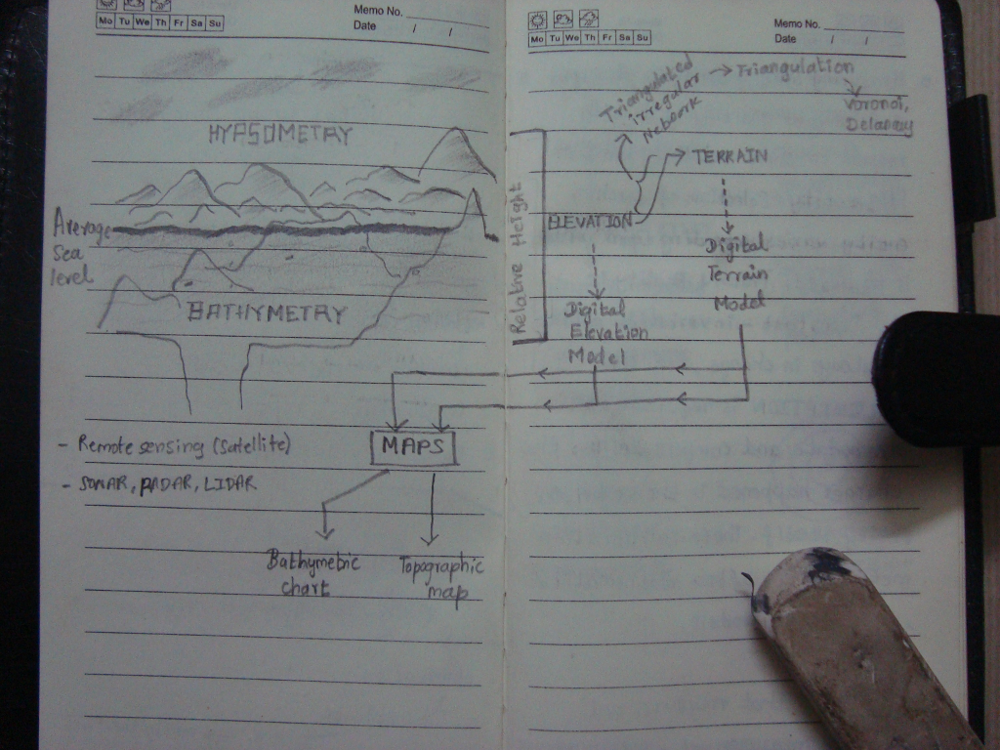
Basic difference between Hypsometry & Bathymetry and how they relate to DEM
With the advent in Satellite & Remote sensing technology, several explorative & scientific satellite missions have
been launched to facilitate global measurements with diverse goals that would surpass the cost indulged
in lauching the remote sensing project itself. In similar way to create computerized models of elevations
international research efforts such as
SRTM,
ASTER & other satellite missions were launched, to provide the data required for creating the
Digital Elevation Model (DEM). Checkout their instrumentation, and are one of the supercooooool integrations
in the scientific, engineering realm... which will surely spike out hairs of DIY instrumentation, communication hackers/researchers
in general.
example bathymetry DEM
With the availability of UAVs, RADAR, SONAR, LIDAR, HyperSpectral based instruments, the data fusion have brought
has very informative and attractive topographical maps which is disseminated to commons use. Even more with the
accessability of Free & Open Source Software tools, technologies & platforms that implement a democratic and open
strandards pur forth by the geo-science community, enables commons to contribute to mapping effectively than ever
before. This strategy not only distributes the information, but also encourages the commons to study about the
mechanisms, policies, scientific principles involved with mapping itself.
LET'S TRY & DO IT
I have always fascinated by
contour/isolines. They add meaning to the existing topography representation when
added at the optimum density. I also like the fact that they can be represented in vector
form which enables detail scaling. It is smooth, curvy [ :) ] & it is generated by
a cool algorithm.
Let's walk our try out through the following simple gis workflow :
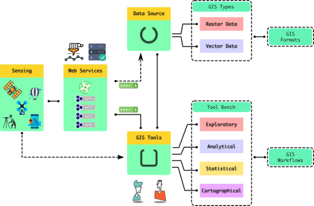
Common Workflow
One has to know the data sources from which they can either download the data directly if the
data provider offers the data in public domain or registration based data access. It has to be
noted that most of the data source mentioned here are mostly of public domain type, which are
mostly offered by established research institutions, and includes collaborative authorship sources
too. Since we here planned to work with terrain/topography data, the following data sources can
be used :
It has to be noted that since we are focusing on some degree of specificity towards terrain
hacking, not all exhaustive sources are listed. If one is interested in knowing them, please
refer to my presentation
listed at links and downloads section of this page. The data source nowadays can not only be
acquired from Satellite, Aerial, UAV, RADAR, LIDAR, Photogrammetry, sources, but also include 3D scanning, SONAR with
unmanned Under Water Vehicles/Robots
for localized mapping. This breaks the surface mapping limitation, and thus can be used in archeological studies too. In such cases, the location is measured by position measurement methods such as dead reckoning, etc.
Most probably Simultaneous Localization and Mapping (SLAM) are developed and used to aid data acquisition.
With data sources identified, and being downloaded with your favourite download
manager, one has to know what are the FOSS tools available to play with. Remember
not to mirror the website when the service is offered by plain FTP. That
would load the server and would eventually lead the administrators to shutdown
for good. I have just listed the popular tools in FOSS realm - which offer a wide
variety of data acquisition, analysis, visualization and storage workflows. However,
apart from specific differences, they tend to embrace a common & overlapped workflow.
However, i am not to list exhausting set of FOSS based GIS tools out there, and for
those who are interested can see my presentation listed at the end of the page in
links and downloads section. It is wise to note, that almost all of the FOSS - GIS
tool stacks work upon the fundamental GDAL/OGR
implementation of open geospatial standards.
To start working with anyone of the above tools, it is necessary that one understands
some degree of projection systems, cartography, raster & vector data formats to start
with. However, if one is interested in exploring the rabbit hole, all beautiful math &
statistical world is waiting where cool computational, algorithms crank and churn out
numbers and commands to enable us to do crazy things we wish to do !
Any map requires a reference layer of grid, especially when the data is a field representing
a phenomenon. This field data is typically available in raster format. Thus
to play with the SRTM data, one has to decide the local region falling under
the administrative boundaries of a state/province; country; continent.
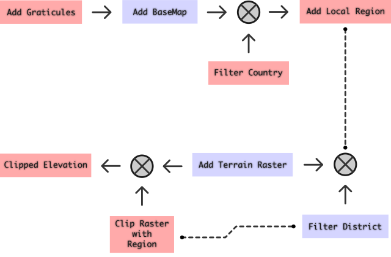
Organizing the data flow
→ Add Graticules:
Download Graticule file from Natural Earth & apply label properties. XKCD's finding your graticule
would be of good help to understand geohashing in general. Starting with a wide geographical area/territory,
we can pin down the required locality or region through geohashing resulting in the required graticule of the
desired region.
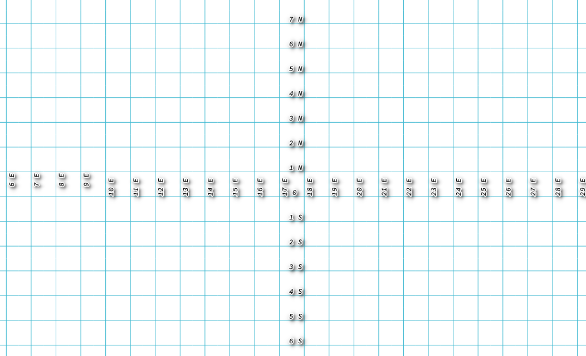
Graticules with Cardinal indication
→ Add Basemap:
Download files from Natural Earth & apply country, state filters.
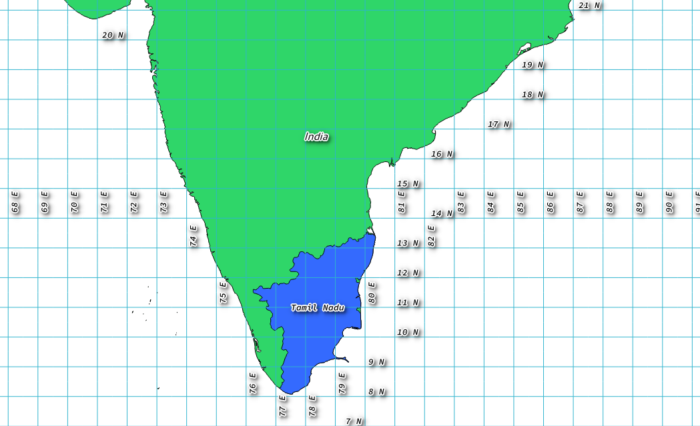
Basemap with graticules
→ Add Local Region & Find Graticues:
Query OSM using Overpass & filter the required region. Your region of
interest might vary... and wouldn't it be interesting to select your locality :D ?
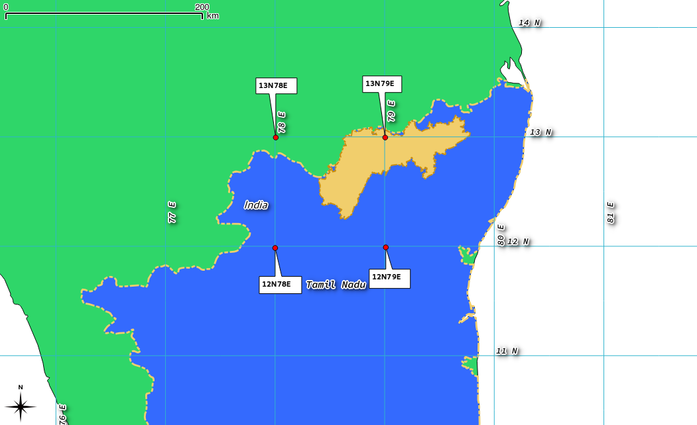
Graticules with Cardinal indication
LONGITUDE
LATITUDE
FILE TO ADD
78
12
lon[78] + lat[12] = N12E078.hgt
79
13
lon[79] + lat[13] = N13E079.hgt
In this case, the map shown above is annotated with coordinates which are bottom-left corners
(red markers) of the graticules that covers the region (yellow) required. Please do read the SRTM
documentation to know why is it so.
In SRTM case, the raster data represents the height, in which the files represent the elevation
profile of an area limited by the graticule formed by cardinal latitudes & longitudes. The above
table clarifies how to find the required files. Thus the following 4 files are required...
N12E078.hgt
N12E079.hgt
N13E078.hgt
N13E079.hgt
NOTE: One has to be careful when working in a disputed area. Make sure
to work by including the disputed area as a part of your residing country. That way map
would be protected by the local law, and can immune the individual from foregin complaints.
Do remember, that when sharing maps in Internet, the map comes in public view without any
geographical limit to access it, and thus be prepared to take the heat from attacks and do not
forgot to provide disclaimer while doing so !
→ Add SRTM - hgt files:
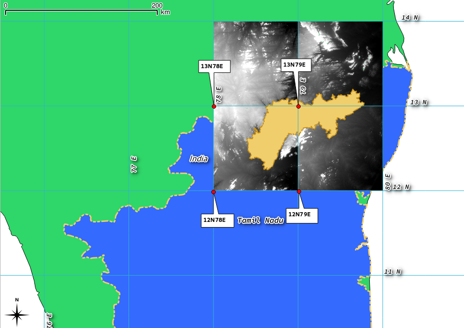
Basemap overlayed with Regional SRTM referenced by coordinates
One might easily note discontinuity in the SRTM rasters on the selected region. This occurs
irrespective of the size of the region of interest. To eradicate this discontinuity, one can
merge the rasters and render into a single raster.
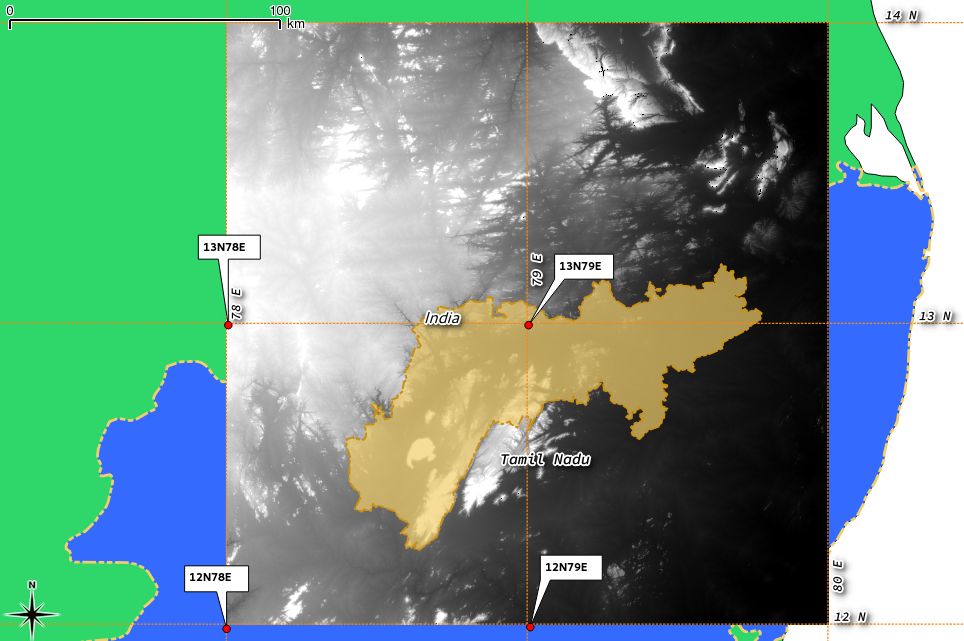
Merged SRTM rasters
We shall disable other layers that acted as reference & helped us selecting required SRTM files.
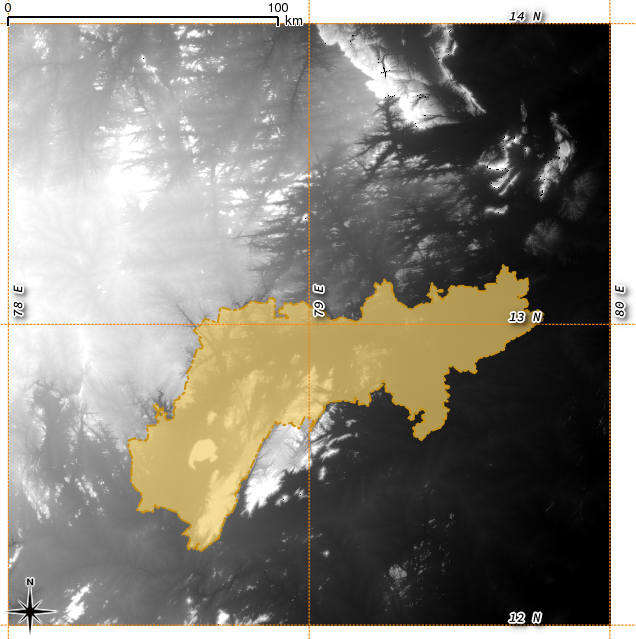
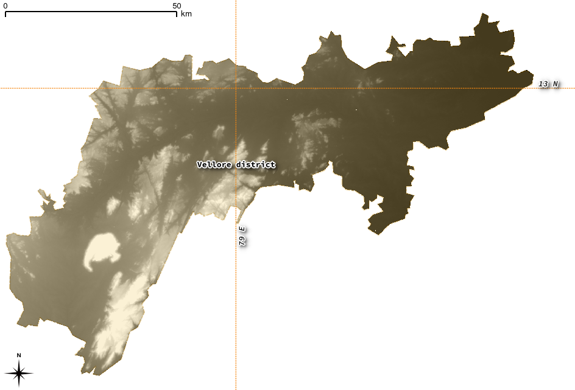
SRTM raster clipped by the regional boundary
One might learn that, after following these steps, that there is no need to access natural earth data at all
for working with a specific locality. But i have included it for learners, and might help learners who are
interested in doing this stuff for the whole state or country itself !!
OK, with the completion of acquiring required data - accessing files from public domain remote sensing
websites, and projecting them into the canvas of the GIS tool (GRASS/QGIS), we shall see how to pre-process
the data, and apply required/interested raster/vector analysis. We shall call the available elevation
data as digital elevation model (DEM).
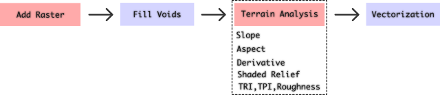
Pre-Processing the terrain data
→ Fill voids in the SRTM raster:
SRTM files are collected by RADAR sensing method, often comes with voids when the terrain is so much rugged
(high variance/high slopes). These voids can be filled out using the GIS tool.
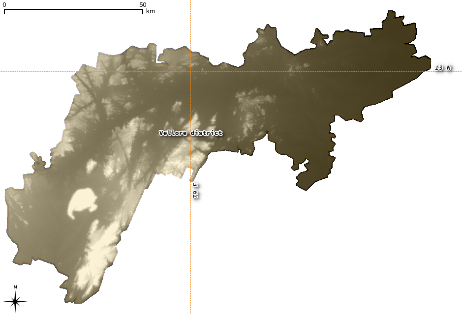
Void Filled SRTM raster in the region
→ Terrain Analysis:
Making sense of the topographical data in of elevation layers (DEM) is vital, as it can drive the impetus
to apply suitable analysis upon interpreting the terrain based on its statistical variations.
GDAL DEM package can be used to
analyze and visualize DEM raster data:
hillshade
slope
aspect
color-relief
Terrain Ruggedness index
Terrain position index
Roughness
→ Vectorization:
After generating the DEM, and applying suitable terrain analysis, the above resultant terrain models can be
used to extract the contours. The following
contour lines are generated from the void filled shaded relief raster obtained above.
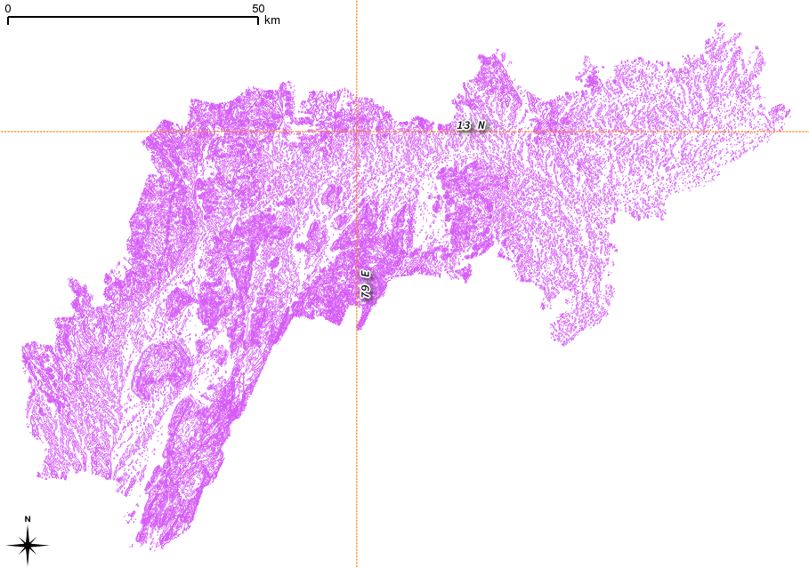
Generated Contour lines at (step size) = 25
→ Overlaying:
Further, the contour lines can be beautified by labelling each contour line with their level value.
The following zoomed in view of contour lines with different step levels overlayed on the shaded relief layer
provides good interpretation of elevation about the terrain of the selected region.
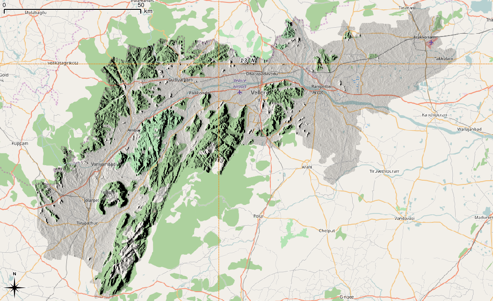
Shaded relief overlayed upon OSM raster
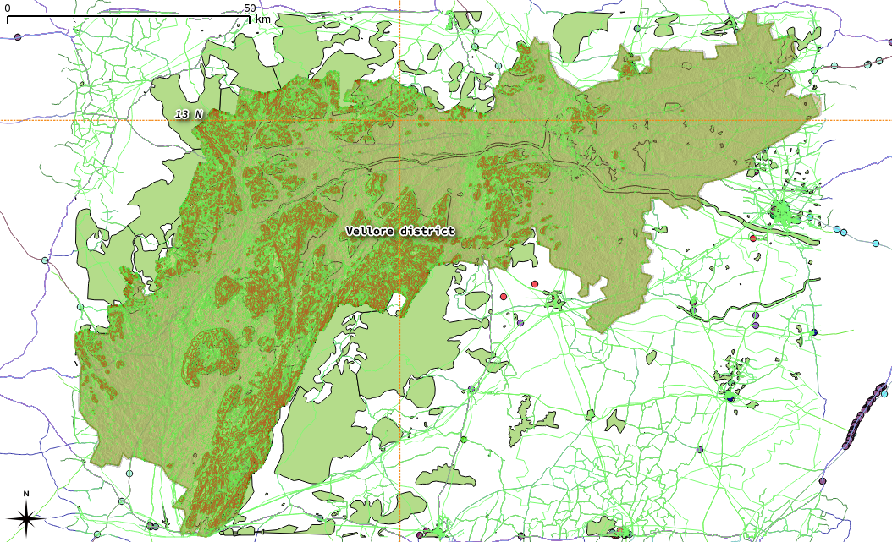
Shaded relief overlayed upon OSM vector data
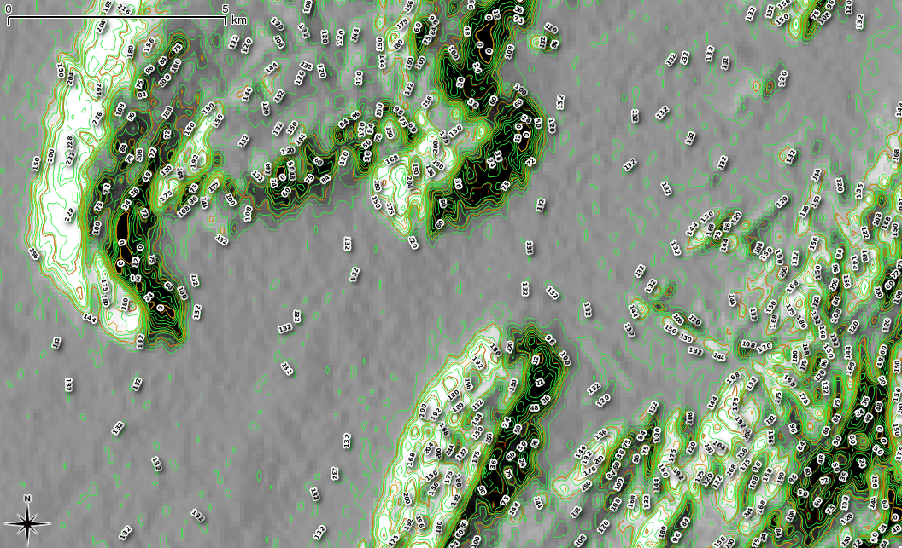
Contours zoomed & overlayed on Shaded relief
Whatever might be the analysis implemented on the data, the results along with the original data, can be visualized
in number of ways. 3D visualization is one of the way that modern webgl & js enables one to simply
use modern web browesers to communicate the data effectively.
Visualization, Interpretation & Communication plays vital role in enabling the user to properly interpret the
information that the map is designed to convey. Level of detail varies upon the information carried by the map itself
defined by the application. With more information the resolution and interpretation would be improved, while craving
for computing power. Try it out for yourself !!!
3D Visualization using Threejs
The 3D rendering can also be awesomely done using GRASS-Nviz
tool which offers wider controls and visualization options. For instance, take a look at what Open Research + Open Data + FOSS Hardware & Software + Open Design + Open Geomatics + Open Archeology can do.
With the widespread usage of Internet, and accelerated usage of client server model throughout the web mapping
services like Open street map; Open cycle map; Open topo map; ... etc, have enabled commons to easily contribute
as a collaborative effort. However, with transition towards grassroots based internet, the ability to serve the
content/information locally to the locality in a decentralized way or a flat p2p way is a better approach than the
centralized hierarchically controlled internet based business that restricts access to web map data.
★★★★★ : This is where the federated free software projects like
tileserver-light - by osmtovector tiles project
comes to play in place of traditional mapnik based image(png) based web map services with space and presentation
efficiency that effectively reduces the delay and offers information capacity by hacking the nature of scalable vector
graphics and the ability of modern web technologies. The end result is a scalable and federated approach to access map,
which necessarily does not even require continuous internet connection to serve the map, to update the user screen -
until and unless the new data is itself updated in the collaborative map servers. Already fully p2p capable map sharing
applications are being developed and would more likely serve in the space of hard to reach & slow internet places,
eliminating the digital divide in the Collaborative Web Mapping & possibly in GIS.
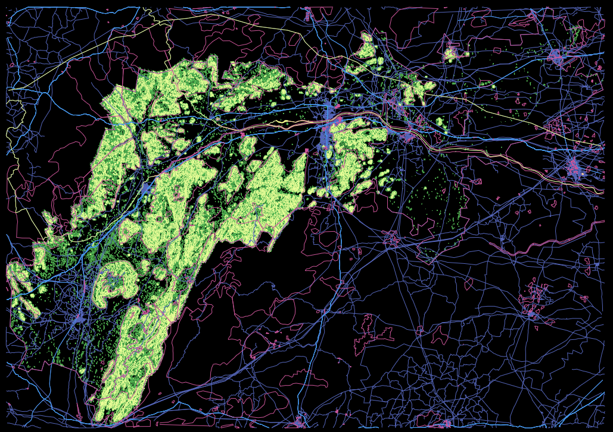
Vector tiles served by tileserver-light
The above screenshot represents the xray-view rendered by the tilerserver-light that takes the mapbox-tiles file
generated from the geojson files using tippecanoe. The required
geojson files are generated from the shapefiles/xml files using GRASS/QGIS. Here, the vector layers such as contours,
OSM based points, lines, multiline-strings, polygons, admin layers.. are used to generate the respective geojsons.
The raw geojson can be easily styled and can be used to produce very attractive web maps. Styling can be done locally
by Maputnik either using the web version
or by deploying the desktop version. :D...
@/.\ ----+------------------+
/ \ | Yo ! So What ??? |
+------------------+
@/.\ ----+-----------------------------+
/ \ | What are the applications ? |
+-----------------------------+
+-------------------------------------+---( me )
| Learning basic Geomatics, GIS, |
| Contributing to OSM, |
| Communication - N/W planning, |
| Transport - N/W Mapping, |
| Archeologic explorations , |
| Disaster resilient mapping ... |
| you better learn to imagine ! |
+-------------------------------------+


 Power of few FOSS tools, libraries used while learning topography
Power of few FOSS tools, libraries used while learning topography{kind=link}